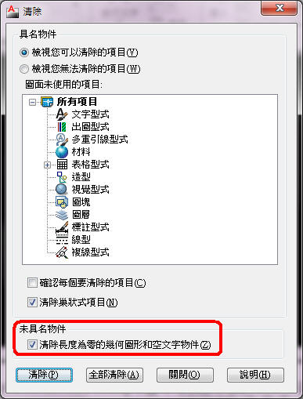
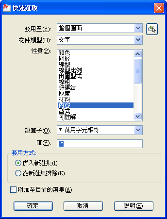

AutoCAD隨著每年進版，相信很多使用者會慢慢發現問題，常常在舊版本沒有狀況，
當使用新的版本就會發現，而空文字物件及長度為零的線段就是典型的狀況之一。
通常都是發生在舊有的圖檔，因為以前版本的文字可以輸入空字串，
但是會造成圖面存在過多的空字串情況，而長度為零的線段同樣會發生在圖中，
之前都需要靠LISP或者透過QSELECT快速選取來刪除。
現在從2010版本的PURGE新增清除 清除長度為零的幾何圖形和空文字物件，這樣就可以輕易解決囉!

清除完畢後會出現以下訊息:
代碼:
指令: PU PURGE 清除了 252 個 空文字物件。
另外也可以使用 -PURGE 方式來單一清除 長度為零的幾何圖形 或 空文字物件
代碼:
指令: -PURGE
請輸入要清除的未使用物件的類型
[color=red]標註型式(D)/圖層(LA)/線型(LT)/材料(MA)/多重引線型式(MU)/出圖型式(P)/造型(SH)/文字型式(ST)/複線型式(M)/表格型式(T)/視覺型式(V)/註冊程式(R)/長度為零的幾何圖形(Z)/空文字物件(E)/全部(A)]:
說明：
刪除非圖塊物件中長度為零的幾何圖形 (直線、弧、聚合線等)。也會刪除非圖塊物件中僅包含空格 (無文字) 的多行文字和文字。
注意事項：PURGE 指令不會從圖塊或鎖住的圖層中移除長度為零的幾何圖形或空文字和多行文字物件。
示範影片為2009版本:
※大陸地區請到「优酷」觀看視頻： http://v.youku.com/v_show/id_XNjUzODA4NjY4.html
補充：2009版本需要安裝原廠外掛 Bonus Pack :
Bonus Pack 是AutoDESK原廠釋出的外掛，所以 2009版一開始是沒有這些功能的。
如果你們公司是 Subscription合約用戶 ，即可登入 Subscription 免費下載安裝喔~
註：從AutoCAD 2010開始為內建新功能，可以使用「PURGE」指令清除。
2012/12/02補充：
1.關於「空字串文字」，早期的CAD版本文字會有這問題！
可以使用lisp語法刪除
(ssget "X" '((0 . "TEXT") (1 . ""))) 或 (ssget "X" '((0 . "TEXT") (1 . " ")))
說明：ssget "X" 這是LISP過濾語法，應該還要加上 (0 . "TEXT") ，過濾文字，(1 . "")為空文字中非空格
說明：ssget "X" 這是LISP過濾語法，應該還要加上 (0 . "TEXT") ，過濾文字，(1 . " ")為空文字中含空格
指令: ERASE
選取物件: (ssget "X" '((0 . "TEXT") (1 . " ")))
找到 1100 個[/code]
2.論壇的外掛程式可以使用 VacancyTxt 指令：
[刪除空字串文字]VacancyTxt指令：自動刪除存在圖面中的空字串文字。
3.置於2009以下版本非程式的解決方式，可使用預設「快速選取」QSELECT指令
因為字串通常分別為「一個空格」或「一個以上」，所以我用萬用字元「 *」（空格*）選擇～

ps:需注意圖面空文字物件，有可能為非空格。
※大陸地區請到「优酷」觀看視頻： http://v.youku.com/v_show/id_XNjUzNzYzOTIw.html